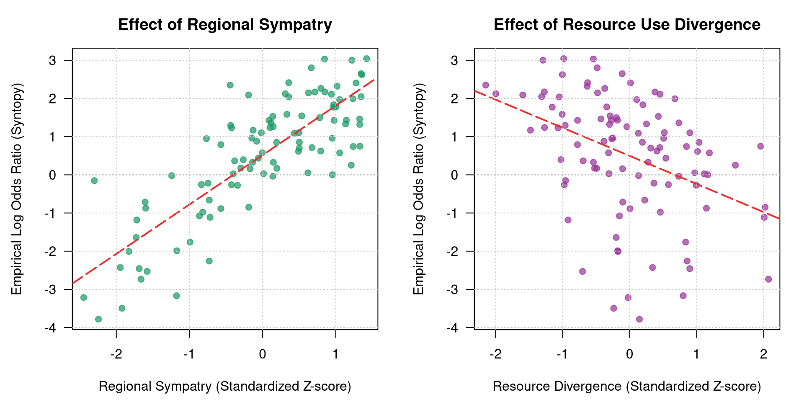

Following the framework of Remeš & Harmáčková (2023), this assignment simulates and analyzes local co-occurrence (syntopy) in bird sister species pairs. Syntopy is here the final stage of speciation cycle during which two sister species encounter each other at the same sites. I model the co-occurrence probability at local sites as a function of ecological and spatial predictors. This idea is connected to the topic of my master’s thesis, where I model syntopy on two spatial scales using BBS data for passerines, range maps from eBirds statust & trends.
To measure syntopy accurately, we need to consider only sites within the range overlap for the analysis. We can imagine the range overlap being the jar, from which we randomly draw sampled sites. There are four possible outcomes of that drowing: 1) both species are present, 2) species A is present, 3) species B is present or 4) both species are missing at the site. To measure an affinity of species co-occurence we use log-odds ratio as it makes the odds ratio centered around zero, which makes the scale linear.
If we want to model this problem using the Bayesian methods, than the most accurate probability distribution for this process is the Fisher’s non-central hypergeometric distribution, where N stands for the population size (number of sites within the sympatric zone), K is the number of co-occurrence states (K = 4), n is the number of draws and k stands for number of co-occurrences. This distribution is accurate, because the sampling is carried out without replacement (unlike binomial distribution) which matches the true nature of the problem as we have a limited number of pairs.
NoteSteps
Generate dream data for N=100 pairs using Fisher’s hypergeometric distribution.
Visualize the generated data.
Fit the model using ulam function and compare the estimates using different N.
Generative Process
To satisfy the assignment’s complexity requirements, I define 5 true parameters that dictate the data-generating process:
\(\beta_{0} = 0.5\) (Baseline log-odds of co-occurrence; slight facilitation)
\(\beta_{res.div} = -0.8\) (Resource use divergence: greater divergence decreases syntopy)
\(\beta_{hab.pref} = 0.6\) (Similar microhabitat and environmental preference increases syntopy)
\(k_i\) = number of sites where both species co-occur
\(m_{1i}\) = total number of sites where species A is present for pair \(i\)
\(m_{2i}\) = total number of sites where species B is present for pair \(i\)
\(N_i\) = total number of sites sampled within the sympatric range of pair \(i\)
\(ω_i\) = the conditional co-occurrence odds ratio for pair \(i\)
Data Generation
For the Fisher’s hypergeometric distribution we can use the library BiasedUrn
For the number of sites I choose a gamma-Poisson distribution as it is an integer
set.seed(12)num_pairs <-100N <-rpois(num_pairs, lambda =rgamma(n = num_pairs, shape =2, rate =1/100)) # gamma-Poisson distribution, N of sitesm1 <-rbinom(num_pairs, size = N, prob =0.5) # sites with species Am2 <-rbinom(num_pairs, size = N, prob =0.5) # sites with species Bhist(N)
summary(m1)
Min. 1st Qu. Median Mean 3rd Qu. Max.
4.0 55.0 86.0 101.5 140.0 336.0
summary(m2)
Min. 1st Qu. Median Mean 3rd Qu. Max.
3.0 52.0 91.5 100.7 137.2 325.0
Some species pairs have very large number of sampled sites, while some of them have just a few sampled sites within the sympatric range. Min. 1st Qu. Median Mean 3rd Qu. Max. 6.0 103.8 172.0 201.1 274.8 658.0
Let’s continue with the generation of parameter values. Note that we need to standardize all parameters before proceeding.
set.seed(12)X_res_div <-rnorm(num_pairs, mean =0, sd =1) # X1X_hab_pref <-rnorm(num_pairs, mean =0, sd =1) # X2# Sympatryraw_beta <-rbeta(num_pairs, shape1 =2, shape2 =1)target_min <-5# sympatry treshold is 5 %target_max <-100# full overlapsympatry <- target_min + (raw_beta -min(raw_beta)) * (target_max - target_min) / (max(raw_beta) -min(raw_beta)) # z-score of sympatryX_sympatry <- (sympatry -mean(sympatry)) /sd(sympatry) # X3# Check the distribution structurehist(sympatry, breaks =12, main="Simulated Sympatry (%)", xlab="Percentage Overlap", col="darkseagreen3")
To inspect the properties of our generated universe before fitting our model, we construct two exploratory diagnostic layouts using base R graphics.
First, we analyze the sampling distribution of the species’ site-level occupancies and the realized raw co-occurrences. Second, we calculate an empirical estimator of the conditional log-odds ratio for each pair and plot it against our two strongest environmental gradients to visually test for the expected ecological responses.
1. Characterizing Occupancies and Overlaps
We start by evaluating the overall proportions of sites occupied by each species (\(m_1/N\) and \(m_2/N\)) alongside the fraction of total available sites where they physically overlap (\(k/N\)).
# Contingency matrix extraction with Haldane-Anscombe 0.5 adjustmentcell_a <- sim_data_fischer$kcell_b <- sim_data_fischer$m1 - sim_data_fischer$kcell_c <- sim_data_fischer$m2 - sim_data_fischer$kcell_d <- sim_data_fischer$N - sim_data_fischer$m1 - sim_data_fischer$m2 + sim_data_fischer$kemp_log_OR <-log(((cell_a +0.5) * (cell_d +0.5)) / ((cell_b +0.5) * (cell_c +0.5)))# Configure side-by-side layoutspar(mfrow =c(1, 2), mar =c(4.5, 4.5, 3, 1.5), las =1)# Panel A: Sympatry Effect (True Beta = 1.2)plot(sim_data_fischer$sympatry, emp_log_OR, pch =19, col =rgb(0.1, 0.6, 0.4, 0.7),xlab ="Regional Sympatry (Standardized Z-score)", ylab ="Empirical Log Odds Ratio (Syntopy)",main ="Effect of Regional Sympatry")fit_sym <-lm(emp_log_OR ~ sim_data_fischer$sympatry)abline(fit_sym, col ="firebrick2", lwd =2, lty =5)abline(h =0, lty =3, col ="gray50")grid(lty ="dotted", col ="gray80")# Panel B: Resource Divergence Effect (True Beta = -0.8)plot(sim_data_fischer$res_div, emp_log_OR, pch =19, col =rgb(0.6, 0.2, 0.6, 0.7),xlab ="Resource Divergence (Standardized Z-score)", ylab ="Empirical Log Odds Ratio (Syntopy)",main ="Effect of Resource Use Divergence")fit_res <-lm(emp_log_OR ~ sim_data_fischer$res_div)abline(fit_res, col ="firebrick2", lwd =2, lty =5)abline(h =0, lty =3, col ="gray50")grid(lty ="dotted", col ="gray80")

Figure 1: Empirical log-odds ratios plotted against standardized environmental gradients. Dashed red lines display trends calculated via simple ordinary least squares regressions.
Modeling
# 1. Prepare your data list (using the variables from your script)dat_list_fisher <-list(k = sim_data_fischer$k,m1 = sim_data_fischer$m1,m2 = sim_data_fischer$m2,N = sim_data_fischer$N,res_div = sim_data_fischer$res_div,hab_pref = sim_data_fischer$hab_pref,sympatry = sim_data_fischer$sympatry,prod = sim_data_fischer$prod)# 2. Build the skeleton code using ulam()# The custom() macro does two things: it writes the "target += ..." Stan call, # and it forces ulam to correctly declare k, m1, m2, and N in the data block.m_skeleton <-ulam(alist(# Likelihood k ~custom( fisher_hyper_lpmf(k |exp(log_omega), m1, m2, N) ),# Linear Predictor log_omega <- b0 + b_res*res_div + b_hab*hab_pref + b_sym*sympatry + b_prod*prod,# Priors b0 ~dnorm(0, 1), b_res ~dnorm(0, 1), b_hab ~dnorm(0, 1), b_sym ~dnorm(0, 1), b_prod ~dnorm(0, 1) ), data = dat_list_fisher, sample =FALSE# CRITICAL: This tells ulam to build the code, but not run it!)# 3. Extract the autogenerated Stan codestan_code <-stancode(m_skeleton)
data{
array[100] int N;
array[100] int m2;
array[100] int m1;
array[100] int k;
vector[100] prod;
vector[100] sympatry;
vector[100] hab_pref;
vector[100] res_div;
}
parameters{
real b0;
real b_res;
real b_hab;
real b_sym;
real b_prod;
}
model{
vector[100] log_omega;
b_prod ~ normal( 0 , 1 );
b_sym ~ normal( 0 , 1 );
b_hab ~ normal( 0 , 1 );
b_res ~ normal( 0 , 1 );
b0 ~ normal( 0 , 1 );
for ( i in 1:100 ) {
log_omega[i] = b0 + b_res * res_div[i] + b_hab * hab_pref[i] + b_sym * sympatry[i] + b_prod * prod[i];
}
for ( i in 1:100 ) target += fisher_hyper_lpmf(k[i] | exp(log_omega[i]), m1, m2, N);
}
# FIX: Add the missing row-indices [i] for m1, m2, and N that ulam missedstan_code <-gsub(pattern ="fisher_hyper_lpmf(k[i] | exp(log_omega[i]), m1, m2, N)",replacement ="fisher_hyper_lpmf(k[i] | exp(log_omega[i]), m1[i], m2[i], N[i])",x = stan_code,fixed =TRUE)# 4. Define your supervisor's C++ function block (with corrected variable names)functions_block <-"functions { real fisher_hyper_lpmf(int k, real mu, int m1, int m2, int N) { if (mu <= 0) return not_a_number(); // Bounds for hypergeometric distribution int k_min = max({0, m1 + m2 - N}); int k_max = min({m1, m2}); // Safety check for support bounds if (k < k_min || k > k_max) return negative_infinity(); // Log-numerator for the observed value k real log_num = lchoose(m1, k) + lchoose(N - m1, m2 - k) + k * log(mu); // Normalization constant calculation int range_size = k_max - k_min + 1; vector[range_size] terms; for (i in 0:(range_size - 1)) { int curr_i = k_min + i; terms[i + 1] = lchoose(m1, curr_i) + lchoose(N - m1, m2 - curr_i) + curr_i * log(mu); } return log_num - log_sum_exp(terms); }}"# 5. Inject the functions block at the very top of the corrected codefull_stan_code <-paste0(functions_block, stan_code)# 6. Compile and sample directly with rstanm_fisher_rethinking <-stan(model_code = full_stan_code,data = dat_list_fisher,chains =4, cores =4,iter =2000,seed =12)
Remeš, V. and Harmáčková, L. (2023), Resource use divergence facilitates the evolution of secondary syntopy in a continental radiation of songbirds (Meliphagoidea): insights from unbiased co-occurrence analyses. Ecography, 2023: e06268. https://doi.org/10.1111/ecog.06268 Newbury, A. (2024). Bayesian estimation of co-occurrence affinity with dyadic regression. bioRxiv. https://doi.org/10.1101/2024.01.16.575941